Polyominoes that pack better tilted than grid-aligned
Each piece is a discretised keyed rhombus. It packs the plane in a
rhombille arrangement — three orientations 120° apart, which no combination of
integer translations and 90° rotations can reproduce — more densely than the best
grid-aligned packing anyone has found for it. The comparison reduces to area per copy:
the cell count cancels, so all that matters is D_aligned / D_tilted > 1. That is
why the pieces can be hollowed so aggressively, and why cell count is a nearly free axis to
minimise.
How the search works →
— the reduction, why a tilted packing can never be perfect, and how the aligned side is
proved bad.
22 cells · ratio 1.007
scale n=6.244021360062769, no tile shape assumed — smallest known. One cell smaller than the 23-cell piece below, at the cost of nearly all the margin — the ratio falls from 1.095 to 1.006, so it is the most fragile entry here and the one most likely to be refuted by a packing with more copies per period
cells
22
tilted area / copy
33.8
aligned area / copy
34.0
ρ tilted
0.6516
ρ aligned
0.6471
ratio Da/Dt
1.0070
checked to
5 copies/period
the polyominotilted packing — density 0.6516 three orientations 120° apart
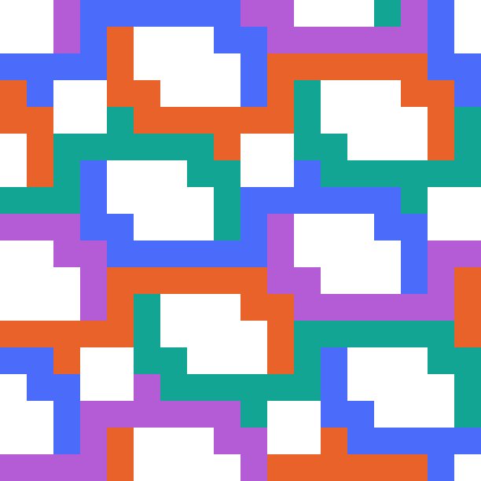
best known grid-aligned — density 0.6471 2 copies per 68-cell period
23 cells · ratio 1.096
scale n=6.244033259048198, no tile shape assumed — smallest with a comfortable margin, and proved optimal among 180-degree-symmetric pieces: the relaxation is infeasible at every smaller scale and solves to exactly 23 here. The scale came from binary-searching it rather than guessing
cells
23
tilted area / copy
33.8
aligned area / copy
37.0
ρ tilted
0.6812
ρ aligned
0.6216
ratio Da/Dt
1.0958
checked to
6 copies/period
the polyominotilted packing — density 0.6812 three orientations 120° apartbest known grid-aligned — density 0.6216 1 copy per 37-cell lattice cell
27 cells · ratio 1.052
scale n=6.788688330185323, no tile shape assumed — solver-found over all valid pieces, 180-degree symmetric, and tuned to the smallest scale at which it still packs, searching over where the arrangement sits — at integer scale it would fail. The cell count is what erosion leaves; trading the margin away prunes it to 23 cells at ratio 1.002, which is not shown because it has not been verified past 2 copies
cells
27
tilted area / copy
39.9
aligned area / copy
42.0
ρ tilted
0.6765
ρ aligned
0.6429
ratio Da/Dt
1.0523
checked to
6 copies/period
the polyominotilted packing — density 0.6765 three orientations 120° apart
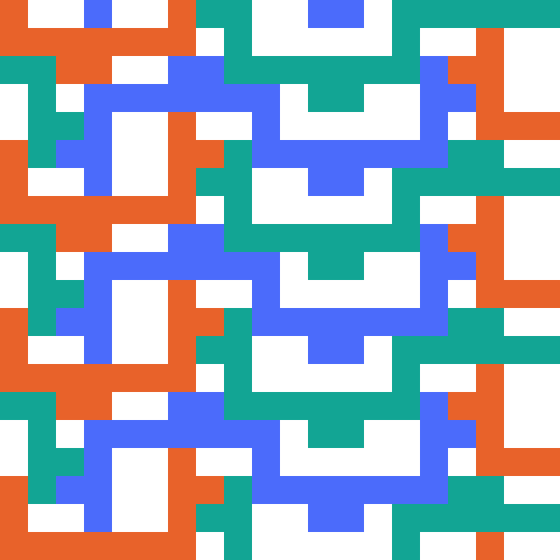
best known grid-aligned — density 0.6429 4 copies per 168-cell period
30 cells · ratio 1.095
scale n=7.752780532702953, no tile shape assumed — solver-found over all valid pieces, 180-degree symmetric, scale-tuned
cells
30
tilted area / copy
52.1
aligned area / copy
57.0
ρ tilted
0.5763
ρ aligned
0.5263
ratio Da/Dt
1.0950
checked to
4 copies/period
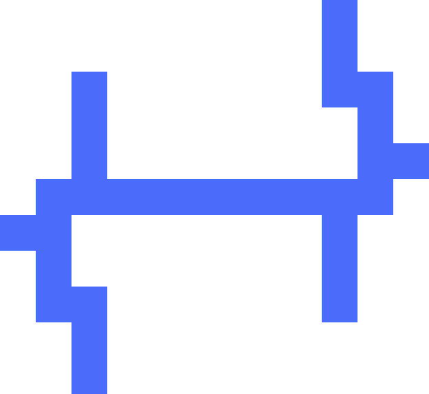
the polyominotilted packing — density 0.5763 three orientations 120° apart
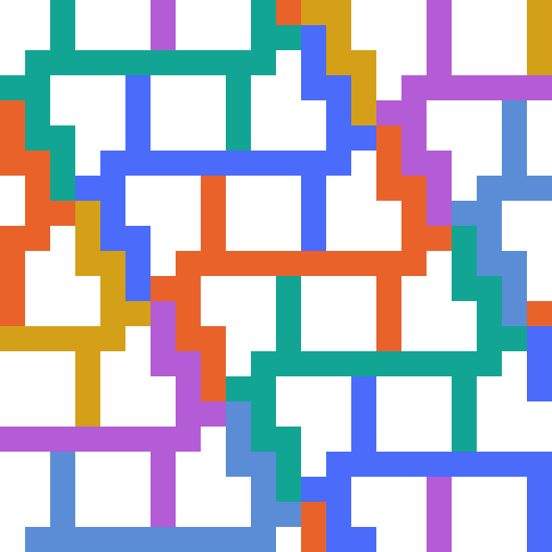
best known grid-aligned — density 0.5263 1 copy per 57-cell lattice cell
47 cells · ratio 1.016
tab depth 0.575, span [0.492,0.612] of each edge, scale n=10 — smallest from a rasterised tile, trimmed to just above ratio 1
cells
47
tilted area / copy
86.6
aligned area / copy
88.0
ρ tilted
0.5427
ρ aligned
0.5341
ratio Da/Dt
1.0161
checked to
2 copies/period
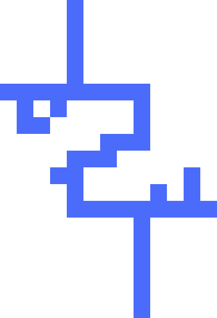
the polyomino
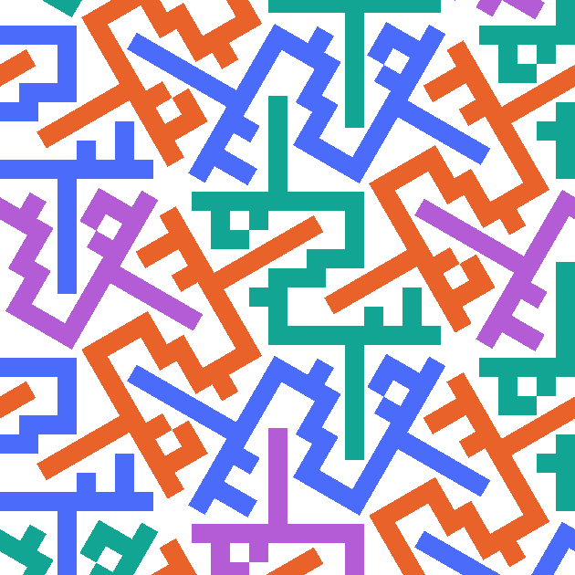
tilted packing — density 0.5427 three orientations 120° apart
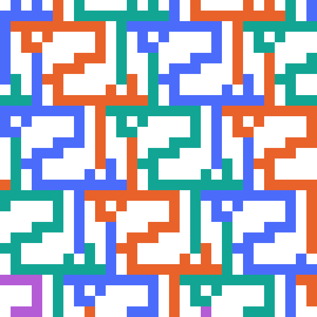
best known grid-aligned — density 0.5341 1 copy per 88-cell lattice cell
50 cells · ratio 1.028
tab depth 0.575, span [0.492,0.612] of each edge, scale n=10
cells
50
tilted area / copy
86.6
aligned area / copy
89.0
ρ tilted
0.5774
ρ aligned
0.5618
ratio Da/Dt
1.0277
checked to
3 copies/period
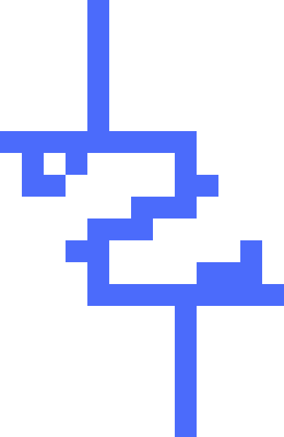
the polyomino
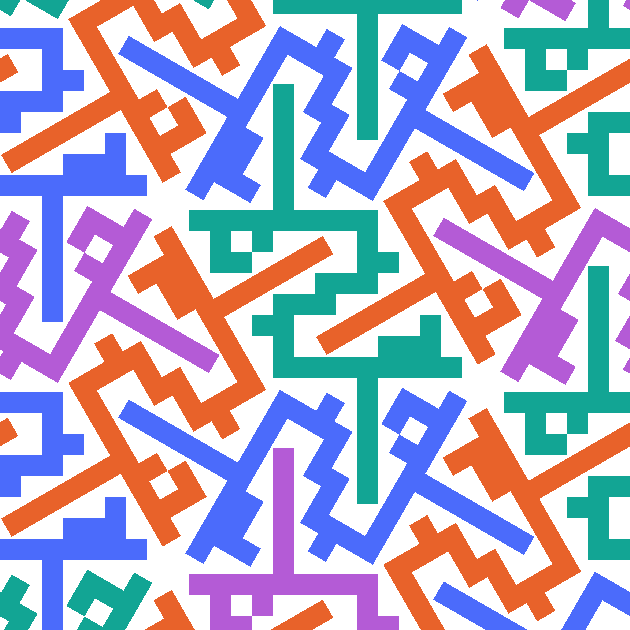
tilted packing — density 0.5774 three orientations 120° apart
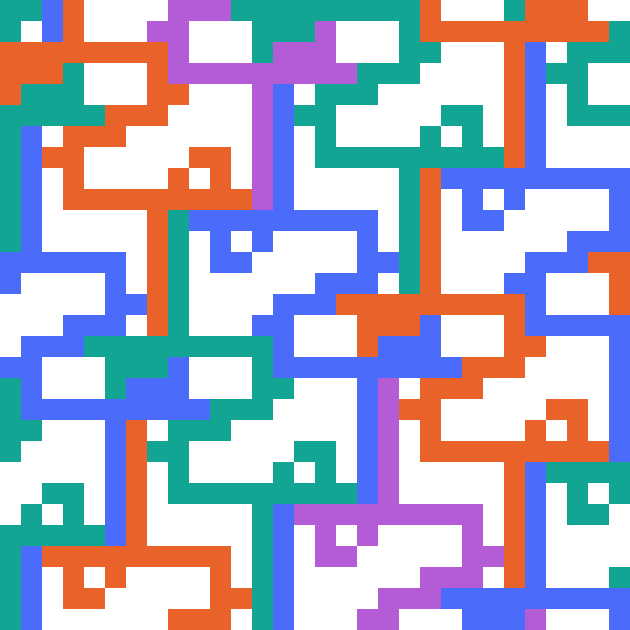
best known grid-aligned — density 0.5618 2 copies per 178-cell period
55 cells · ratio 1.107
tab depth 0.625, span [0.521,0.641] of each edge, scale n=11 — trimmed while keeping a 10% margin
cells
55
tilted area / copy
104.8
aligned area / copy
116.0
ρ tilted
0.5249
ρ aligned
0.4741
ratio Da/Dt
1.1070
checked to
2 copies/period
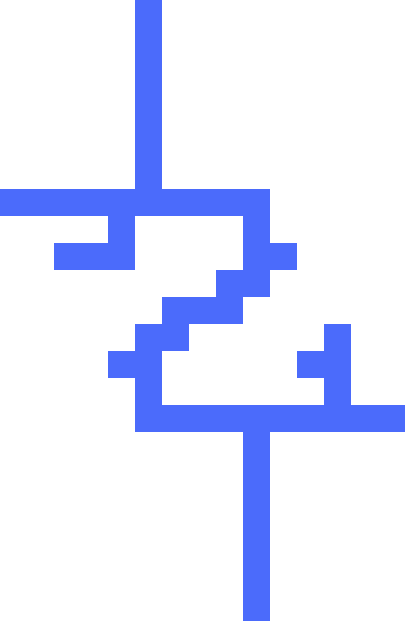
the polyominotilted packing — density 0.5249 three orientations 120° apart
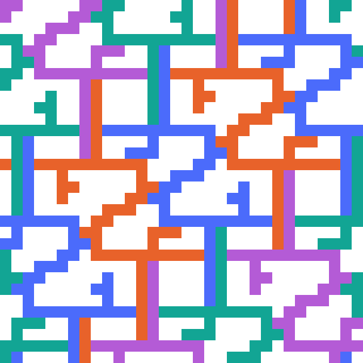
best known grid-aligned — density 0.4741 2 copies per 232-cell period
58 cells · ratio 1.126
tab depth 0.625, span [0.521,0.641] of each edge, scale n=11 — widest margin at this size; verified exhaustively to 3 copies per period
cells
58
tilted area / copy
104.8
aligned area / copy
118.0
ρ tilted
0.5535
ρ aligned
0.4915
ratio Da/Dt
1.1261
checked to
3 copies/period
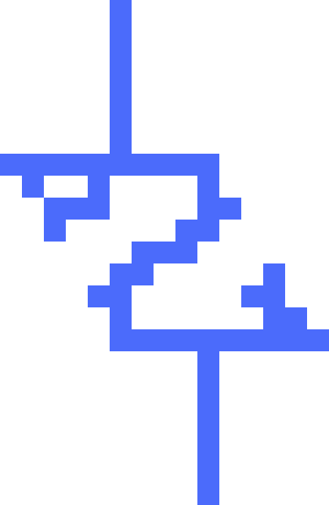
the polyomino
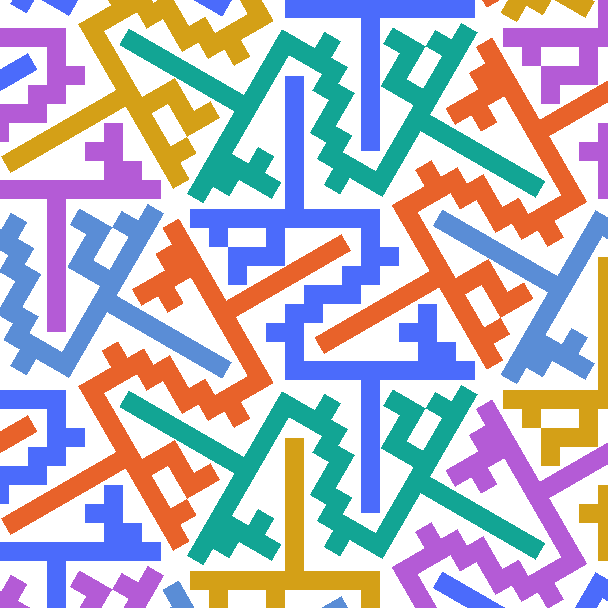
tilted packing — density 0.5535 three orientations 120° apart
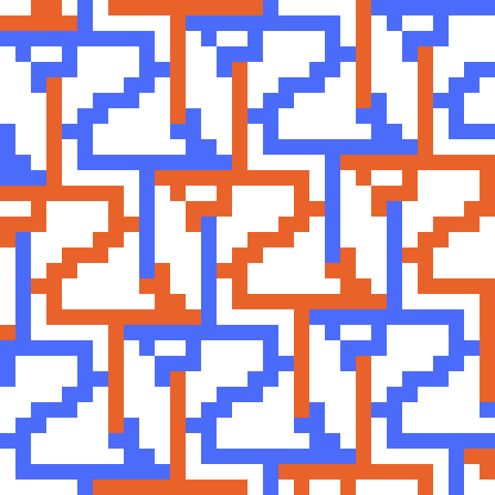
best known grid-aligned — density 0.4915 1 copy per 118-cell lattice cell
68 cells · ratio 1.119
tab depth 0.65, span [0.535,0.625] of each edge, scale n=12
cells
68
tilted area / copy
124.7
aligned area / copy
139.5
ρ tilted
0.5453
ρ aligned
0.4875
ratio Da/Dt
1.1186
checked to
2 copies/period
the polyomino
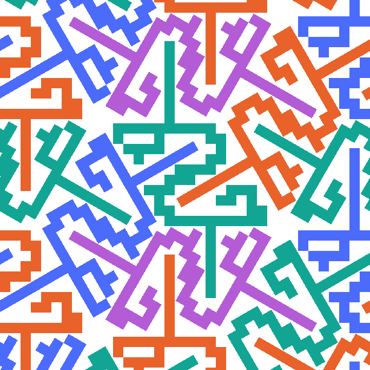
tilted packing — density 0.5453 three orientations 120° apart
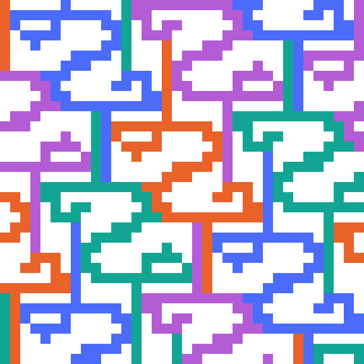
best known grid-aligned — density 0.4875 2 copies per 279-cell period
87 cells · ratio 1.208
tab depth 0.65, span [0.48,0.6] of each edge, scale n=14 — widest margin
cells
87
tilted area / copy
169.7
aligned area / copy
205.0
ρ tilted
0.5125
ρ aligned
0.4244
ratio Da/Dt
1.2077
checked to
2 copies/period
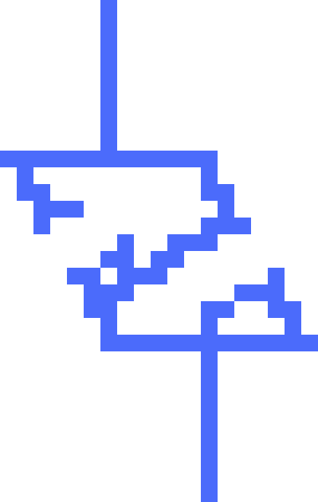
the polyomino
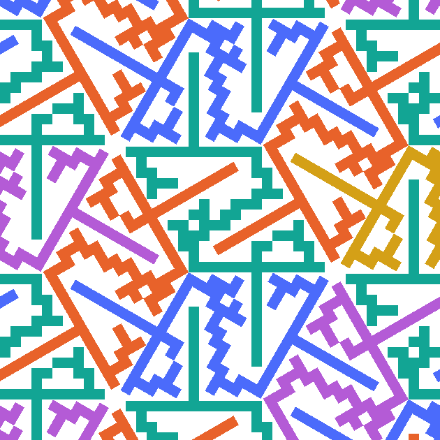
tilted packing — density 0.5125 three orientations 120° apart
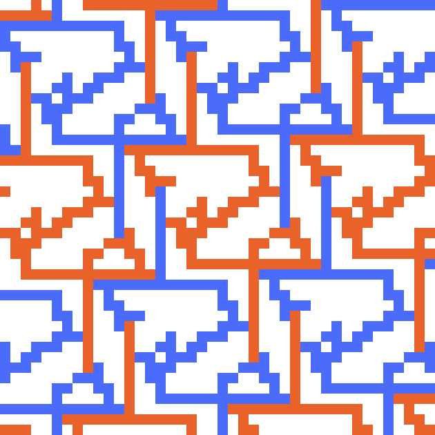
best known grid-aligned — density 0.4244 1 copy per 205-cell lattice cell
183 cells · ratio 1.202
tab depth 0.4, span [0.25,0.55] of each edge, scale n=22 — previous champion, hollowed
cells
183
tilted area / copy
419.2
aligned area / copy
504.0
ρ tilted
0.4366
ρ aligned
0.3631
ratio Da/Dt
1.2024
checked to
2 copies/period
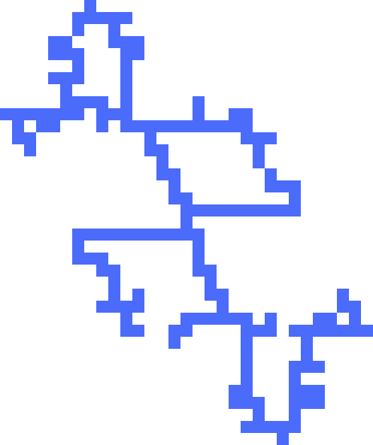
the polyomino
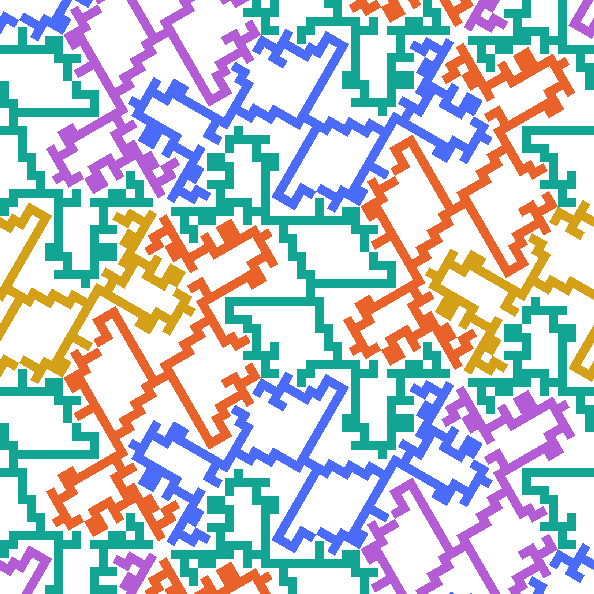
tilted packing — density 0.4366 three orientations 120° apart
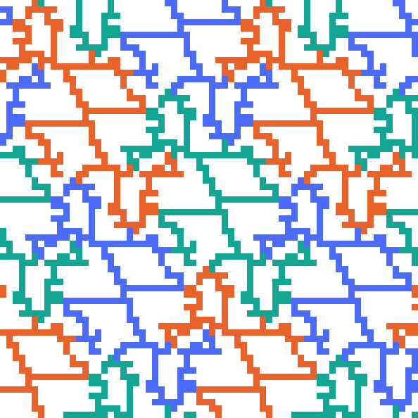
best known grid-aligned — density 0.3631 1 copy per 504-cell lattice cell